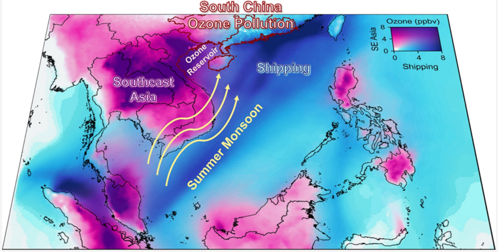
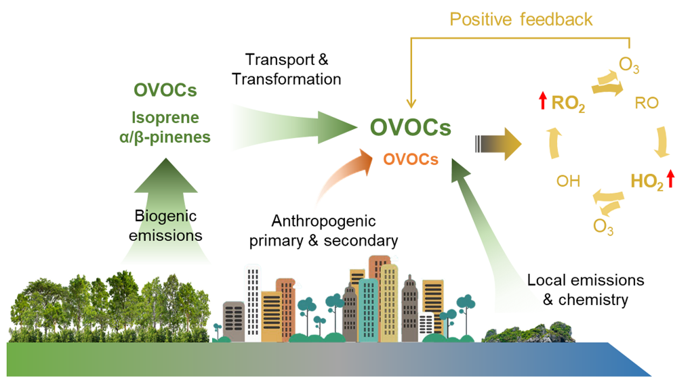
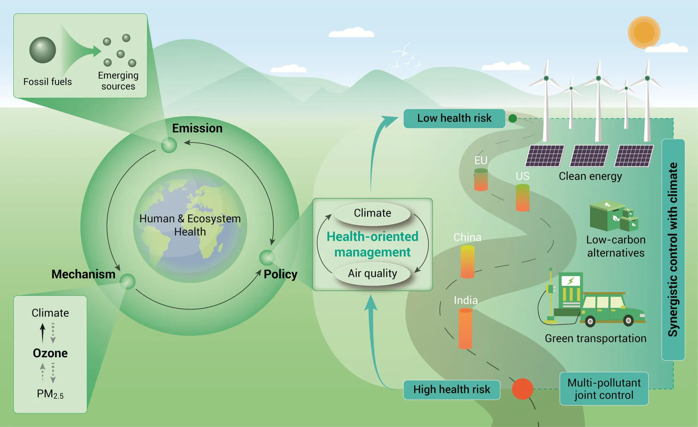
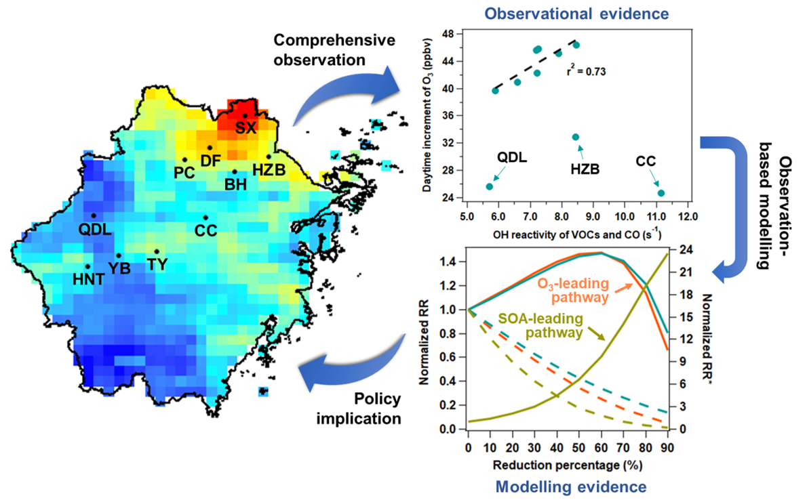
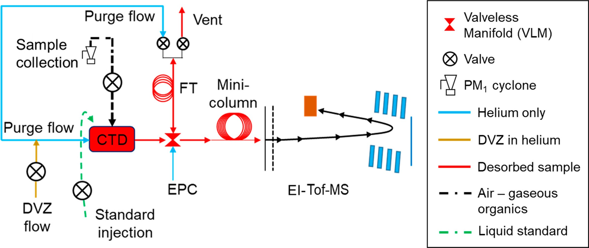
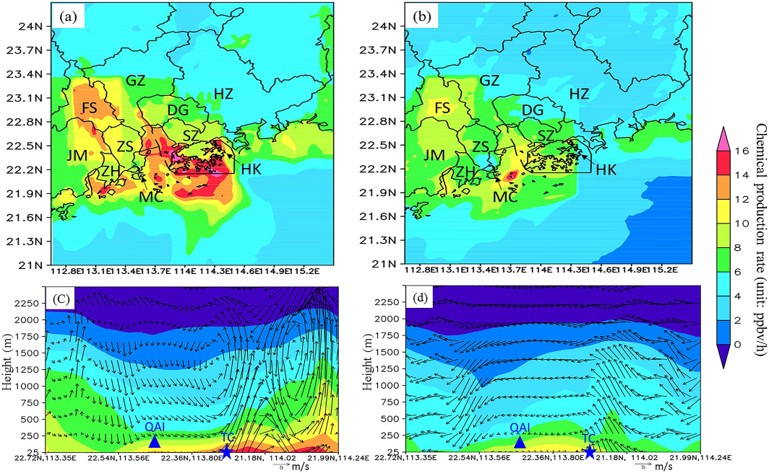
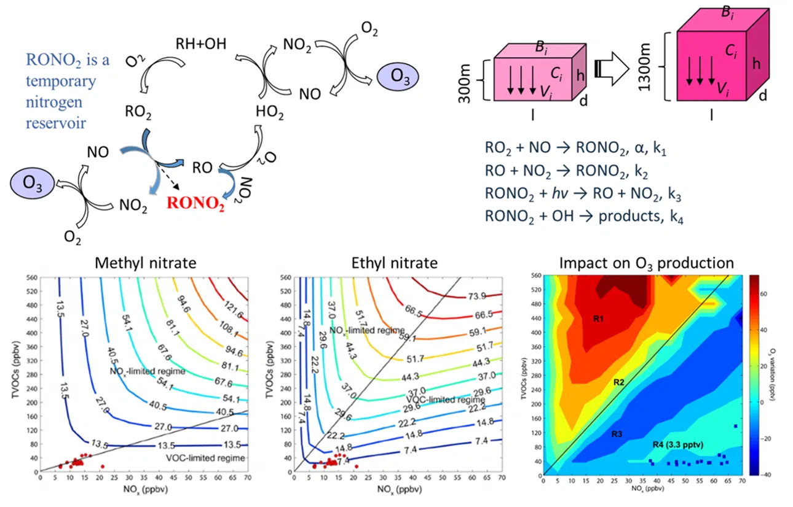

-

Summer Ozone Pollution Episodes in South China and Transport Impacts from Southeast Asia
Environmental Science & Technology (2025)
Read more → -

Significant Biogenic Source of Oxygenated Volatile Organic Compounds and the Impacts on Photochemistry at a Regional Background Site in South China
Environmental Science & Technology (2024)
Read more → -

Exploring the Formation of High Levels of Hydroxyl Dicarboxylic Acids at an Urban Background Site in South China
Journal of Geophysical Research: Atmospheres (2024)
Read more → -

A synergistic ozone-climate control to address emerging ozone pollution challenges
One Earth (2023)
Read more → -

Evidence for Reducing Volatile Organic Compounds to Improve Air Quality from Concurrent Observations and In Situ Simulations at 10 Stations in Eastern China
Environmental Science & Technology (2022)
Read more → -

In Situ Measurements of Molecular Markers Facilitate Understanding of Dynamic Sources of Atmospheric Organic Aerosols
Environmental Science & Technology (2020)
Read more → -

An Ozone "Pool" in South China: Investigations on Atmospheric Dynamics and Photochemical Processes Over the Pearl River Estuary
Journal of Geophysical Research: Atmospheres (2019)
Read more → -

Modeling C1-C4 Alkyl Nitrate Photochemistry and Their Impacts on O3 Production in Urban and Suburban Environments of Hong Kong
Journal of Geophysical Research: Atmospheres (2017)
Read more →